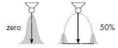

Аддон Покрасить позволяет подготавливать, симулировать и анализировать результаты процессов покраски с помощью робота и покрасочного пистолета.

Включить аддон
Аддон Paint может быть включен/выключен с помощью параметра в настройках.
1.Нажмите на вкладку Файл, а затем на панели Навигация, нажмите Настройки.
2.Нажмите Аддоны, а затем в Покрасить, сделайте одно из следующих действий:
·Чтобы включить аддон, нажмите Включить.
·Чтобы отключить аддон, нажмите Отключить.
Доступ к режиму рисования
Доступ к аддону Покрасить и ее командам можно получить из контекстной вкладки Покрасить, которая появляется, когда вы программируете робота.
·Нажмите на вкладку Программирование, а потом под Инструменты покраски, щелкните вкладку Покрасить.
Подготовьте компоненты
Если вы хотите покрасить компонент, вам нужно подготовить его геометрию, материал и поверхность для покраски.
Уровень проработанности деталей
Геометрия компонента может быть тесселирована до желаемого уровня детализации для нанесения краски.
1.На вкладке Покрасить, в группе Подготовить геометрию, нажмите Подготовьте компоненты к покраске.
2.В 3D-мире напрямую выберите компонент(ы), которые вы хотите покрасить во время симуляции.
3.В области задач Подготовьтесь к покраске, установите Максимальную длину ребра до нужного значения, а затем щелкните Подготовить выбранные компоненты.
Покрытие
Материал подготовленного компонента определяется цветовой картой, которая назначает материалы геометрии в зависимости от толщины краски. Как правило, подготовленный компонент не имеет краски, поэтому его материал — это материал, сопоставленный с нулевой толщиной краски.
1.На вкладке Покраска, в группе Показать краску, нажмите Редактировать цветовые карты.
2.В области задач Редактор цветовых карт, таблице Map, найдите строку с толщиной краски 0, а затем установите его Цвет до нужного материала.
Маскировка
Любая поверхность подготовленного компонента, закрытая другим компонентом, за некоторыми исключениями не окрашивается. Уровень детализации в подготовленном компоненте может повлиять на растекание краски, когда края маскируемых областей грязные и содержат некоторое количество краски. Как правило, это происходит, когда длина ребра геометрии компонента слишком велика. Некоторые малярные пистолеты могут не поддерживать фоновую окклюзию, поэтому замаскированные области все равно будут закрашены.
Определить визуализацию Paint
Во время симуляции покрасочный пистолет динамически добавляет текстурные координаты к геометрии подготовленных компонентов. Эти координаты используются для определения толщины краски на поверхностях. Это означает, что вы можете изменить визуализацию краски до и после ее рендеринга в трехмерном мире.
Отображение цвета
Существует два режима визуализации краски на поверхностях. Один из режимов заключается в использовании градиента цветов, сопоставленного со значениями толщины краски. Это позволит смешивать цвета и визуализировать нанесение краски, как в реальном мире. Другой режим заключается в использовании цветов, сопоставленных с интервалами значений толщины краски. Это позволит вам четко разграничить толщину краски на поверхностях. Например, участку поверхности со значением толщины краски X можно присвоить материал Y в соответствии с такими правилами: X<=0, Y - белый; 0<X<=0.5, Y - синий; и 0.5<X<=1, Y - красный.
1.На вкладке Покрасить, в группе Показать краску, нажмите Редактировать цветовые карты.
2.В области задач Редактор цветовых карт, установите Map к одному из следующих:
·Чтобы определить параметры визуализации краски с цветовым градиентом, щелкните Визуализация цветной краски.
·Чтобы определить параметры визуализации краски с цветовым интервалом, щелкните Визуализация толщины краски.
3.В таблице Map, выполните одно или несколько из следующих действий:
·Чтобы изменить сопоставление, найдите строку, которую вы хотите изменить, а затем отредактируйте поля этой строки.
·Чтобы удалить сопоставление, найдите строку, которую хотите удалить, а затем в поле Толщина краски, щелкните значок Корзины.
·Чтобы добавить сопоставление, отредактируйте последнюю строку таблицы. Каждая допустимая строка должна иметь определенное значение толщины краски.
Рендеринг
Рендеринг 3D-мира повлияет на визуализацию краски, но не на ее цвет. Вы можете переключаться между различными цветовыми режимами в любое время и отображать/скрывать краску на поверхностях.
·На вкладке Покрасить, в группе Показать краску, сделайте одно из следующих действий:
·Чтобы не отображать краску, выберите Нет.
·Чтобы отобразить краску с помощью цветового градиента, выберите Цвет.
·Чтобы отобразить краску с использованием цветового интервала, выберите Толщина.
Измерьте толщину краски
Инструмент толщины краски можно использовать для измерения и записи толщины краски в любой точке поверхности окрашенного компонента. По умолчанию толщина краски измеряется в микронах или микрометрах (мкм).
1.На вкладке Покрасить, в группе Измерение, нажмите Толщина краски.
2.В 3D мире, сделайте одно из следующих действий:
·Чтобы отобразить измерение, наведите указатель на окрашенную поверхность.
·Чтобы записать измерение, щелкните точку на окрашенной поверхности. Это добавляет временную аннотацию для этой точки измерения.
·Чтобы удалить измерения закройте панель Инструмент Измерения Краски.
Удалить краску
Краску можно удалить с компонента. То есть вы можете удалить текстурные координаты, добавленные к геометрии компонента пистолетом для нанесения краски.
·На вкладке Покрасить, в группе Удалить краску, сделайте одно из следующих действий:
·Если вы хотите удалить краску с выбранного компонента, нажмите Выделено. Вам нужно будет сначала выбрать компонент в 3D-мире, а затем использовать команду Выделить, чтобы удалить краску.
·Если вы хотите удалить краску со всех компонентов в 3D-мире, нажмите Все. Помните, что это влияет только на компоненты, которые были подготовлены к покраске.
·Если вы хотите автоматически удалять всю краску при сбросе симуляции, установите флажок Удалить при сбросе.
·Если вы не хотите удалять краску при сбросе симуляции, снимите флажок Удалить при сбросе
Распределение краски и симулирование
Пистолет для покраски — это компонент, который может добавлять краску к компонентам во время симуляции. Как правило, все краскораспылители имеют схожие свойства. Обращайтесь к этому разделу по мере необходимости при использовании любого краскораспылителя.
Свойства симуляции
Некоторые свойства краскопульта определяют, как часто во время симуляции в 3D-мире обновляется картина. Другие свойства определяют минимальное и максимальное расстояние для нанесения краски с учетом расстояния от сопла пистолета до поверхности.
·Частота обновления - Частота (Гц) расчета распределения краски во время симуляции. Более высокая частота дает более детальную симуляцию, но более медленную визуализацию распределения краски. Как правило, это было проблемой в предыдущих версиях продукта, поэтому новые модели пистолетов для покраски могут не иметь этого свойства.
·Минимальное расстояние распыления - Минимальное расстояние, на котором краска распределяется по поверхности. В большинстве случаев для отображения этого расстояния в 3D-мире используется функция Frame.
·Максимальное расстояние распыления - Максимальное расстояние, на которое распространяется краска. В большинстве случаев для отображения этого расстояния в 3D-мире используется функция Frame. Краска распределяется по поверхности в пределах заданного минимального и максимального расстояния распыления.
Калибровочные свойства
Краскораспылитель откалиброван, чтобы знать его нормальное распределение краски с использованием определенных свойств. Старые версии пистолетов для нанесения краски требовали от вас калибровки, но теперь калибровка выполняется за вас. В большинстве случаев предполагается, что покрасочный пистолет имеет симметричную конусообразную форму, представляющую профиль или область распределения краски.
·Эффективность пистолета - Общая эффективность переноса краски краскораспылителем. Меньшее значение означает, что меньше краски переносится на поверхность за время. Единицей этого свойства может быть процент или значение, например 50 % или 0,5.
·Расстояние распыления - Расстояние от сопла пистолета до поверхности в программе робота. То есть на каком расстоянии сопло от поверхности при покраске роботом. Как правило, вы уже знаете это расстояние при обучении робота или номинальное расстояние распыления краскопульта.
В зависимости от версии вашего краскораспылителя краска будет самой густой в средине и менее густой при отклоненнии каждой из сторон. Кроме того, значение расстояния профиля может соответствовать значению толщины (в микронах). Два профиля могут использоваться для несимметричного или асимметричного распределения.

Круговой рисунок толщины создается с использованием профилей X и Y, исходящих из центра круга. Значения расстояния определяют распространение и радиус узора. Значения толщины определяют нанесение краски в зависимости от направления радиуса, например, когда краскопульт проводит по поверхности. 
Среднее смещение и стандартное отклонение рассчитываются для профилей X и Y, чтобы правильно проецировать путь капель краски от их источника до поверхности. В результате и то, и другое влияет на распределение краски по рассчитанному рисунку.

Более новые версии краскопультов могут позволять сопоставлять значения расстояния с загруженным изображением профиля.
Расчетные свойства
Некоторые свойства краскопульта можно использовать для точной настройки распределения краски.
·Скорость потока - Объем краски в секунду (см ^ 3 / с) в зависимости от профиля краски, линейной скорости и эффективности краскопульта.
·Диаметр распыления X и Диаметр распыления Y - Диаметр распылительного конуса на основе профилей X и Y. Например, один профиль можно использовать для симметричного нормального распределения краски. Таким образом, если значение X равно 160 мм, диаметр распыления составляет 320 мм.

·Максимальная толщина - Масштабирует толщину используемого цвета краски на основе профиля краски.
·Среднее смещение - Смещение от центра краскораспылителя в сторону его радиуса, влияющее на нормальное распределение краски. Это влияет на распределение краски при развертке и связано с движением краски по дуге от краскопульта к поверхности.
